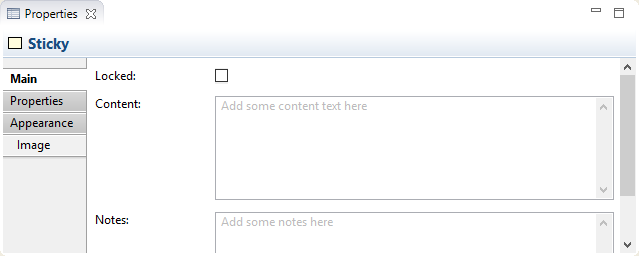
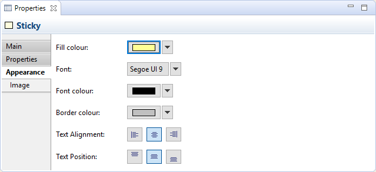
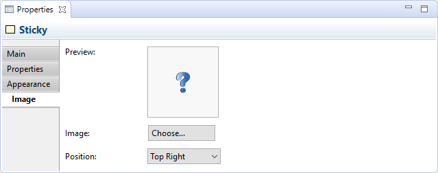

Un objet magnet peut contenir du texte et un icone. Vous pouvez verrouiller le magnet si vous voulez qu'il soit en lecture seule. Il existe un certain nombre de magnets pré-colorés disponibles dans la palette, mais vous pouvez toujours modifier la couleur dans la fenêtre des propriétés.
Propriétés
En sélectionnant un magnet dans une vue du canevas signifie que vous pouvez le modifier ou voir les propriétés suivantes dans la fenêtre des propriétés.
L'onglet principal
Propriétés principales pour un magnet du canevas
| Verrouillé: | Sélectionner ceci vous assure que le magnet ne peut pas être déplacé ou modifié. |
| Contenu: | L'endroit où saisir un contenu textuel pour le magnet. Le texte sera affiché dans le magnet. |
| Notes: | Un espace pour saisir des notes au format texte pour le magnet. Toutes les notes apparaîtront dans l'infobulle du magnet. |
L'onglet des propriétés
Pour plus d'information sur la création et la gestion des propriétés utilisateur, voir propriétés utilisateur.
L'onglet apparence
Propriétés d'apparence pour un magnet du canevas
| Couleur de fond: | Définit la couleur de fond pour l'élément sélectionné. Le bouton "Défaut" définit la couleur de fond comme étant celle définie par le réglage par défaut. |
| Police de caractères: | Définit la police de caractères utilisée pour le texte dans l'élément sélectionné. Le bouton "Défaut" définit la police de caractères comme étant celle définie par le réglage par défaut fixé dans les préférences. |
| Couleur de la police de caractères: | Définit la couleur de la police de caractères utilisée pour le texte dans l'élément sélectionné. Le bouton "Défaut" définit la couleur de la police de caractères comme étant celle indiquée par le réglage par défaut. |
| Couleur de bordure: | Définit la couleur de la bordure utilisée pour l'élément sélectionné. Le bouton "Aucune" supprime la bordure pour cet élément. |
| Alignement du texte: | Aligne le texte dans l'élément sélectionné à gauche, au centre ou à droite. |
| Position du texte: | Aligne le texte dans l'élément sélectionné en haut, au milieu ou en bas. |
L'onglet image
Propriétés de l'image pour un magnet du canevas
| Aperçu: | Une image d'aperçu qui montre comme l'image apparaîtra. Les images sont redimensionnées à une largeur et une hauteur maximum de 100 pixels. Double-cliquer sur la boîte d'aperçu va faire apparaître la fenêtre de dialogue du sélecteur d'image. Vous pouvez également glisser-déposer un fichier d'image de votre bureau sur la boîte d'aperçu. |
| Image: | Choisit une image pour l'élément ou supprimer l'image. Voir "ajouter des images aux éléments" pour plus de détails |
| Position: | Définit la position de l'image relativement à l'élément. |